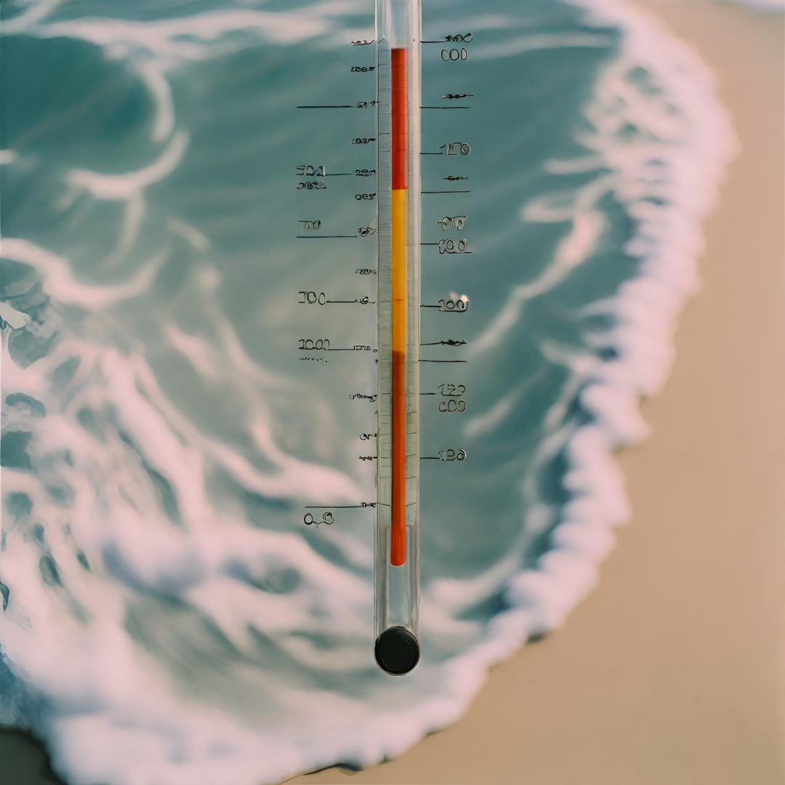
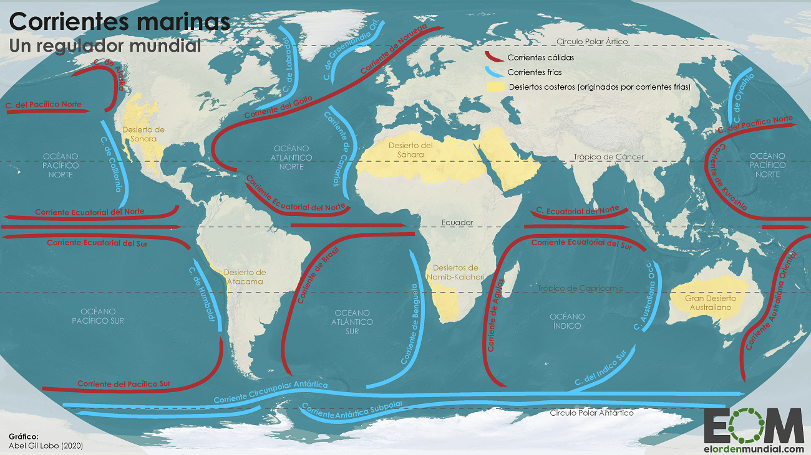

Almacenamiento de calor:
Los océanos absorben y almacenan grandes cantidades de calor del Sol. Según la Administración Nacional Oceánica y Atmosférica de los Estados Unidos (NOAA), los océanos absorben aproximadamente el 93% del exceso de calor generado por el aumento de gases de efecto invernadero en la atmósfera. Este proceso de almacenamiento de calor ayuda a estabilizar la temperatura del planeta y reduce las fluctuaciones climáticas extremas.
Regulación de las temperaturas:
Los océanos actúan como reguladores de las temperaturas regionales. Liberan gradualmente el calor almacenado en el agua, lo que puede mantener las temperaturas costeras más moderadas, evitando cambios bruscos de temperatura. Esto influye en los patrones climáticos locales y regionales.

Corrientes oceánicas:
Las corrientes oceánicas transportan calor a través de los océanos y distribuyen ese calor por todo el mundo. Por ejemplo, la Corriente del Golfo en el Atlántico Norte es conocida por llevar calor hacia el norte de Europa, lo que modera el clima en esa región.
